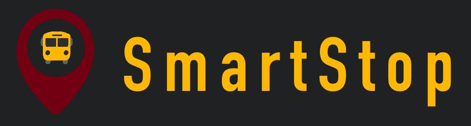
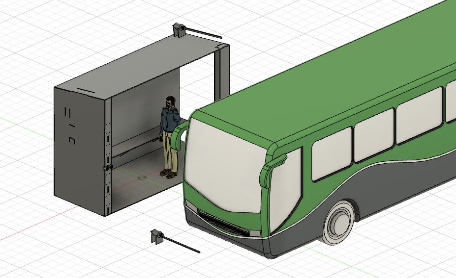
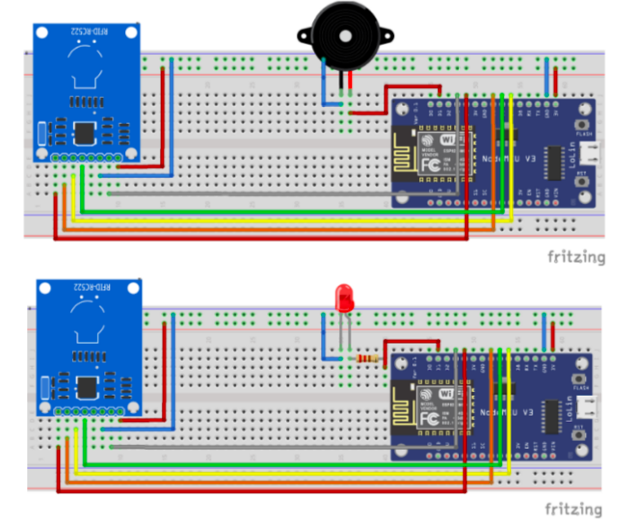

DESARROLLO DE PROTOTIPO FISICO
Smart Stop

Este proyecto busca modernizar una parada de autobus para una mejor optimización del proceso y para dar una mayor comodidad a los usuarios.



Contacto
Francisco Salas Porras | A01177893@tec.mx Ana Sofia Cangas Compean | A00830953@tec.mx Jesús Adrián López Gaona | A00835462@tec.mx Martha Mendoza Alfaro | A01284654@tec.mx Danna Karina González Valencia | A00833606@tec.mx Paola Sofía Sánchez Páez | A01284872@tec.mx